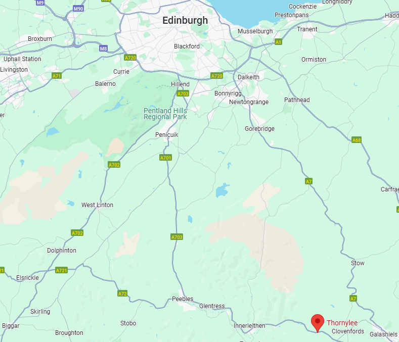

We are roughly 32 miles from Edinburgh city centre

A Little About Ourselves
Welcome to Thornylee Farm & Petting Zoo, where the beauty of the countryside meets fun for the whole family! Nestled in the heart of nature, our farm is more than just a place to visit — it's an experience that brings you closer to animals, nature, and locally sourced goods.
Our Farm
At Thornylee Farm, we believe in sustainability and the joy of connecting with the land. Our farm is home to a wide variety of animals, from playful goats and fluffy bunnies in our Petting Zoo to our hardworking farm animals that help us maintain our farmstead. We welcome visitors of all ages to come and interact with our friendly animals, learn about life on the farm, and even participate in seasonal activities!
Explore & Enjoy
The Shop: Take a piece of Sunny Meadows home with you! Our farm shop offers fresh produce, homemade jams, honey, and unique crafts—all grown or made on the farm. We’re proud to support local artisans and farmers, so you can feel good about every purchase.
The Park: Stretch your legs and breathe in the fresh air while you explore our lush parkland. Perfect for picnics, leisurely strolls, or a fun family outing, our park is a tranquil space to relax and enjoy nature.
The Cafe: Stop by our cozy Farmhouse Cafe for a cup of freshly brewed coffee, a light snack, or a hearty meal made from locally grown ingredients. Whether you're craving a warm slice of pie or a refreshing salad, we have something for everyone to enjoy.
The Petting Zoo: Meet the animals up close in our charming petting zoo! From curious pigs to gentle alpacas, our farm animals are excited to meet you. Perfect for kids and animal lovers of all ages, it’s an unforgettable hands-on experience.
We look forward to welcoming you to Thornylee Farm—where you can unwind, learn, and discover the joys of farm life in a family-friendly environment.